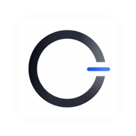

<!doctype html>
<html lang="zh-CN">
<meta charset="utf-8">
<meta name="viewport" content="width=device-width, initial-scale=1">
<style>
  :root { color-scheme: dark; font: 13px -apple-system, BlinkMacSystemFont, sans-serif; color: #f1f4fa; }
  * { box-sizing: border-box; }
  body { margin: 0; padding: 7px 9px; background: transparent; }
  section { max-width: 560px; background: #262a31; border: 1px solid #40454e; border-radius: 9px; }
  .row { display: flex; align-items: center; gap: 10px; padding: 7px 10px; flex-wrap: wrap; }
  .icon { width: 32px; height: 32px; border-radius: 8px; }
  .field { flex: 1; min-width: 104px; }
  h1 { font-size: 13px; line-height: 19px; font-weight: 600; margin: 0; }
  #status { display: flex; align-items: center; gap: 5px; font-size: 11px; line-height: 17px; color: #c2c7d0; }
  #status::before { content: ''; width: 6px; height: 6px; border-radius: 50%; background: #9ba3ae; flex: none; }
  #status[data-state="ready"]::before { background: #62d7a1; }
  #status[data-state="empty"]::before { background: #f4c07c; }
  button { color: #f3f6fa; border: 1px solid #576171; background: #37414e; border-radius: 6px; padding: 5px 12px; font: inherit; cursor: pointer; }
  button:hover:enabled { background: #475669; }
  button:focus-visible { outline: 2px solid #9fc7ff; outline-offset: 2px; }
  button:disabled { opacity: .55; cursor: default; }
  p { margin: 0; border-top: 1px solid #393f49; padding: 7px 12px; color: #bcc3cd; font-size: 11px; line-height: 16px; }
  .mode { padding: 7px 10px; border-bottom: 1px solid #40454e; }
  .mode label { font-weight: 600; margin-right: auto; }
  select { color: #f3f6fa; background: #37414e; border: 1px solid #576171; border-radius: 5px; padding: 4px 5px; font: inherit; max-width: 100%; }
</style>
<section aria-labelledby="label">
  <div class="row mode"><label for="mode">听写方式</label><select id="mode" disabled>
    <option value="toggle">按一下开始，再按一下结束</option>
    <option value="hold">按住听写，松开结束</option>
  </select></div>
  <div class="row">
    
    <div class="field"><h1 id="label">OpenAI API Key</h1><span id="status" role="status">连接 Studio 中…</span></div>
    <button type="button" disabled>配置密钥</button>
  </div>

</section>
<script>
  const query = new URLSearchParams(location.search);
  const context = Object.fromEntries(['uuid', 'key', 'actionid'].map(name => [name, query.get(name)]));
  const button = document.querySelector('button');
  const statusLine = document.querySelector('#status');
  function status(text, state = '') {
    statusLine.textContent = text;
    statusLine.dataset.state = state;
  }
  if (query.get('address') && query.get('port')) {
    const ws = new WebSocket('ws://' + query.get('address') + ':' + query.get('port'));
    const send = msg => ws.send(JSON.stringify({...context, ...msg}));
    const mode = document.querySelector('#mode');
    let actionSettings = {};
    let timer;
    mode.onchange = () => {
      actionSettings = {...actionSettings, dictationMode:mode.value};
      send({cmd:'setSettings', settings:actionSettings});
    };
    ws.onopen = () => {
      send({cmd:'connected', code:0});
      button.disabled = false;
      status('正在读取配置…');
      timer = setTimeout(() => status('配置状态暂不可用'), 3000);
      send({cmd:'getSettings'});
      send({cmd:'getGlobalSettings'});
    };
    ws.onmessage = event => {
      let msg;
      try { msg = JSON.parse(event.data); } catch { return; }
      if (msg.cmd === 'didReceiveSettings' && msg.actionid === context.actionid && msg.settings) {
        actionSettings = msg.settings;
        mode.value = actionSettings.dictationMode === 'hold' ? 'hold' : 'toggle';
        mode.disabled = false;
        return;
      }
      if (msg.cmd !== 'didReceiveGlobalSettings' || !msg.settings) return;
      clearTimeout(timer);
      const saved = Boolean(msg.settings.openaiCredential?.data);
      status(saved ? '已配置' : '尚未配置', saved ? 'ready' : 'empty');
      button.textContent = saved ? '更换密钥' : '配置密钥';
    };
    ws.onclose = () => {
      clearTimeout(timer);
      button.disabled = true;
      mode.disabled = true;
      status('已断开，请重新选中按键');
    };
    button.onclick = () => send({cmd:'sendToPlugin', payload:{action:'configure'}});
  } else {
    status('请在 Studio 中打开');
  }
</script>
</html>
